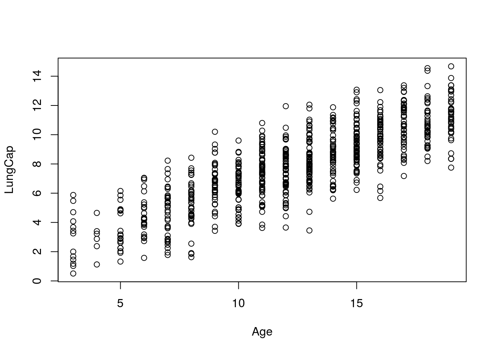

L Regression With R
by Doc P, 10 Jun 2020
Marin video reference 5.1
Import and attach the LungCapData set
We will be working with the variables Age and LungCap
It is a good idea to begin with a scatterplot of the data. We will make Age our X or predictor variable and LungCap our Y or predicted variable.
plot(Age, LungCap)
We generally want to calculate the Pearson r for any data on which we will do a regression analysis. If the value of r is low there will be little purpose in developing the regression equation.
cor(Age, LungCap)## [1] 0.8196749The lm (for linear model) command is used to calculate the regression equation. We will follow Marin and place the results of our calculations in a variable called mod.
mod <- lm(LungCap ~ Age)LungCap ~ Age is read “LungCap as a function of Age”. Note that the predicted variable, LungCap, is listed first and the predictor, Age, is listed second. While orer does not change the results of a correlation analysis, it is important in a regression.
The command “summary(mod)” will generate a summary of our model.
summary(mod)##
## Call:
## lm(formula = LungCap ~ Age)
##
## Residuals:
## Min 1Q Median 3Q Max
## -4.7799 -1.0203 -0.0005 0.9789 4.2650
##
## Coefficients:
## Estimate Std. Error t value Pr(>|t|)
## (Intercept) 1.14686 0.18353 6.249 7.06e-10 ***
## Age 0.54485 0.01416 38.476 < 2e-16 ***
## ---
## Signif. codes: 0 '***' 0.001 '**' 0.01 '*' 0.05 '.' 0.1 ' ' 1
##
## Residual standard error: 1.526 on 723 degrees of freedom
## Multiple R-squared: 0.6719, Adjusted R-squared: 0.6714
## F-statistic: 1480 on 1 and 723 DF, p-value: < 2.2e-16“Intercept”" gives us the hypothetical value of LungCap when Age = 0, and “Age” gives us the slope of the line for predicting LungCap from Age.
Our regression equation (in the form Y’ = aX + b) would therefore be:
Y’ = 0.545 X + 1.147
The remainder of the information in the summary is not of particular interest to us at this time.
We can add a regression line to our scatterplot with the following commands:
plot(LungCap ~ Age)
abline(mod)
Labels, color, line type, and captions may be added to the plot was was discussed in the tutorial on graphing.
confint(mod)## 2.5 % 97.5 %
## (Intercept) 0.7865454 1.5071702
## Age 0.5170471 0.5726497Will generate the 95% confidence interval for the model.
confint(mod, level = 0.99)## 0.5 % 99.5 %
## (Intercept) 0.6728686 1.6208470
## Age 0.5082759 0.5814209Will generate the 99% confidence interval
While we will not be considering more detailed evaluation of the regression model, video 5.2 covers some of the additional analyses we might choose to perform following the development of a regression equation.